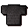

Iron chainbody

| Config name | iron_chainbody |
| Item id | 1101 |
| Value | 210 gp |
| Weight | 15lb |
| Members | No |
| Tradeable | Yes |
| Stackable | No |
| Equip slot | torso |
| Options | Wear |
| Category | armour_body |
| Defined in | scripts/skill_combat/configs/melee/chainbodies.obj |
| Equipment stats | Magic att -15, Stab def 10, Slash def 15, Crush def 19, Magic def -3, Range def 12 |
Iron chainbody
A series of connected metal rings.
How to make
| Skill | Level | XP | Ingredients | Tool | How | Where | Makes |
|---|---|---|---|---|---|---|---|
| Smithing | 26 | 75.0 | interface | anvil | 1 |
Sold at
| Shop | Shopkeeper | Stock |
|---|---|---|
| Wayne's Chains! - Chainmail specialist. | 2 | |
| Horvik's Armour Shop. | 3 |
Quests
Referenced in scripts
scripts/levelrequire/scripts/tier1.rs2scripts/levelup/scripts/levelup_unlocks_smithing.rs2scripts/quests/quest_blackknight/scripts/fortress_guard.rs2scripts/quests/quest_blackknight/scripts/quest_blackknight.rs2